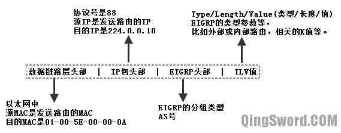
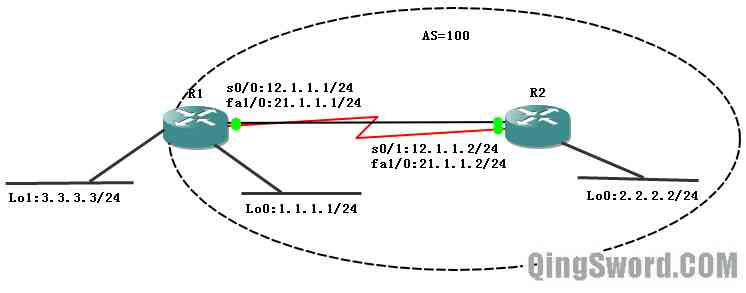
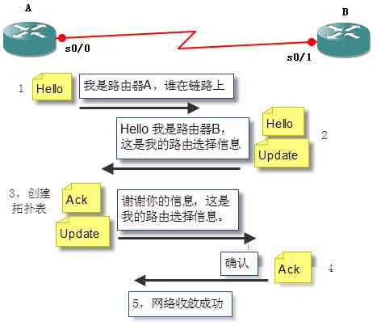
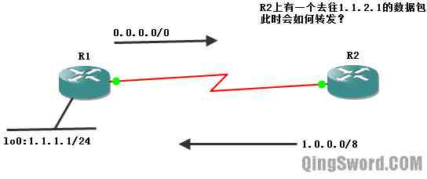
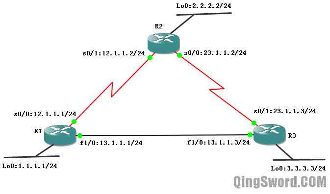
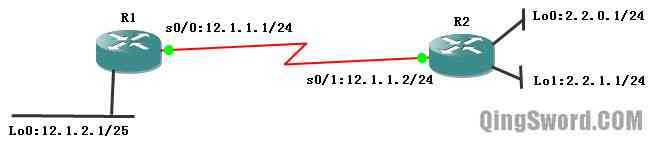

[CCNA图文笔记]-17-EIGRP协议详解
引言
这篇文章主要介绍EIGRP的特性、分组类型、表的种类、度量值的计算以及EIGRP非等值负载均衡、路由汇总等配置。
文章目录
- 0×1.EIGRP特性与基本配置
- a.EIGRP特性
- b.EIGRP包格式
- c.EIGRP分组类型
- d.EIGRP基本配置
- e.查看和修改Hello分组发送间隔
- 0×2.EIGRP表
- a.邻居表（Neighbor Table）
- b.路由表（Routing Table）
- c.拓扑表（Topology Table）
- 0×3.度量值的计算
- 0×4.EIGRP高级配置
- a.非等值负载均衡
- b.手动汇总
- c.外部路由
- d.重发布默认路由
- e.验证
- f.性能调整
0×1.EIGRP特性与基本配置
EIGRP（Enhanced Interior Gateway Routing Protocol，增强型内部网关路由协议），是思科私有的，高级距离矢量、无类的路由选择协议。
a.EIGRP特性
复合度量值：使用带宽（bandwidth）、负载（load）、延时（delay）、可靠性（reliability），默认只使用带宽和延时做为度量值计算的参数；
快速收敛：使用DUAL算法，通过在拓扑表中保存可行性后继，相当于次优路由，当可用路由消失后，次优路由马上进入路由表；
100%无环路：主要受益于DUAL算法；
配置简单；
可靠的更新：采用RTP（可靠传输协议），并为每个邻居保存一个重传列表；
建立邻居关系：运行EIGRP的路由器中有三张表，路由表、邻居表、拓扑表；
支持多种网络协议；
支持VLSM和CIDR；
支持手动汇总，能关闭自动汇总；
使用组播地址224.0.0.10发送更新；
支持等价和非等价负载均衡；
兼容IGRP；
增量式更新：仅发送变化的路由信息；
路由标记功能：从IGRP何任何外部源收到的更新都标记成EX（外部）；
b.EIGRP包格式
EIGRP被设计成一个传输层协议，协议号是88，EIGRP使用RTP（Reliable Transport Protocol，可靠传输协议）传送和接收EIGRP分组
EIGRP的包格式如下图（图1）：
数据链路层头部：每个组播IP都有一个对应的MAC地址，组播厂商编码为"01-00-5E"，后面的编号根据不同的组播IP计算得来，224.0.0.10对应的MAC地址是"01-00-5E-00-00-0A"。
c.EIGRP分组类型
EIGRP使用5种分组类型，分别是：Hello分组，ACK（确认）分组，Update（更新）分组，Query（查询）分组以及Reply（回复）分组，下面首先介绍Hello分组。
Hello分组用来发现、验证和重新发现邻居路由器。默认的Hello分组发送间隔，除小于等于1.544Mb/s的多点帧中继链路是60秒外，其他链路都是5秒。使用组播地址224.0.0.10发送，在邻居表中包含一个"保持时间"字段，记录了最后收到hello分组的时间，如果在保持时间到期前没有收到邻居路由器的任何Hello分组，就认为这个邻居出现了故障，默认的保持时间是Hello时间的3倍，即15秒。EIGRP仅在宣告进EIGRP进程的接口的主IP地址上发送分组。
d.EIGRP基本配置
下面使用一个实例演示EIGRP基本配置以及Hello分组的参数设置。
实验拓扑如下图（图2）所示，R1和R2使用串行线路和以太网线路相连，在R1上有两个回环接口其中除Lo1(3.3.3.3)外，R1和R2的其他接口都宣告进EIGRP进程，自制系统号100（AS=100）。
注：本文[0×1][0×2][0×3]三节都使用上图（图2）来介绍EIGRP配置。
R1配置：
R1(config)#int s 0/0 R1(config-if)#ip add 12.1.1.1 255.255.255.0 R1(config-if)#no shut R1(config-if)#int fa 1/0 R1(config-if)#ip add 21.1.1.1 255.255.255.0 R1(config-if)#no shut R1(config-if)#int lo 0 R1(config-if)#ip add 1.1.1.1 255.255.255.0 R1(config-if)#no shut R1(config-if)#int lo 1 R1(config-if)#ip add 3.3.3.3 255.255.255.0 R1(config-if)#no shut /*EIGRP需要配置AS号*/ R1(config-if)#router eigrp 100 /*宣告接口，使用的是反掩码形式*/ R1(config-router)#net 1.1.1.0 0.0.0.255 R1(config-router)#net 12.1.1.0 0.0.0.255 R1(config-router)#net 21.1.1.0 0.0.0.255 R1(config-router)#end /* * router eigrp 100 * EIGRP进程需要配置AS号（自制系统号），本例的100就是AS号， * AS标识了属于一个互连网络中的所有路由器， * 同一个AS内的不同路由如果想要互相学习路由信息，必须配置相同的AS号。 * * net 12.1.1.0 0.0.0.255 * 在EIGRP中宣告接口需要使用反掩码，如果不输入反掩码， * 路由默认会使用接口的主类网络号， * "net 12.1.1.0" 等价于 "net 12.0.0.0 0.255.255.255" * * 如果路由的所有接口都宣告进EIGRP进程，则可以使用"net 0.0.0.0"一次性宣告所有接口。 * */
R2配置：
R2(config)#int s 0/1 R2(config-if)#ip add 12.1.1.2 255.255.255.0 R2(config-if)#no shut R2(config-if)#int lo 0 R2(config-if)#ip add 2.2.2.2 255.255.255.0 R2(config-if)#no shut R2(config-if)#int fa 1/0 R2(config-if)#ip add 21.1.1.2 255.255.255.0 /*自制系统号和R1相同*/ R2(config-if)#router eigrp 100 /*宣告所有接口接入EIGRP进程*/ R2(config-router)#net 0.0.0.0 R2(config-router)#end
e.查看和修改Hello分组发送间隔
使用下面的命令查看Hello分组默认发送间隔：
/*显示R1的s0/0接口上EIGRP配置信息*/ R1#show ip eigrp interfaces detail s0/0 /*AS号*/ IP-EIGRP interfaces for process 100 /*Hello分组发送间隔，默认5秒*/ Hello interval is 5 sec ...
尝试修改Hello分组发送间隔：
/*修改hello时间间隔为30秒，前面的100是AS号，hello时间是针对接口配置的*/ R1(config)#int s 0/0 R1(config-if)#ip hello-interval eigrp 100 30 /*再次查看，发现hello时间变成30秒了*/ R1#show ip eigrp interfaces detail s 0/0 Hello interval is 30 sec ... R1# /*这样修改后，会遇到一个问题，因为默认的EIGRP保持时间是15秒，而R1发给R2的hello间隔却被修改成了30秒，我们将看到路由上面反复的出现邻居关系down掉后又建立的消息，*/ *Mar 1 00:31:28.823: %DUAL-5-NBRCHANGE: IP-EIGRP(0) 100: Neighbor 12.1.1.2 (Serial0/0) is down: Interface Goodbye received *Mar 1 00:31:33.739: %DUAL-5-NBRCHANGE: IP-EIGRP(0) 100: Neighbor 12.1.1.2 (Serial0/0) is up: new adjacency /*解决的办法是修改保持时间大于hello时间，一般修改成hello时间的3倍（90秒）*/ R1(config)#int s 0/0 R1(config-if)#ip hold-time eigrp 100 90 R1(config-if)#end /*修改后在R2上查看EIGRP邻居表，看到R1发送过来的保持时间是从90秒开始倒计时的*/ R2#show ip eigrp neighbors IP-EIGRP neighbors for process 100 H Address Interface Hold Uptime SRTT RTO Q Seq (sec) (ms) Cnt Num 1 21.1.1.1 Fa1/0 10 00:01:07 1025 5000 0 9 0 12.1.1.1 Se0/1 70 00:01:07 58 348 0 7 /*上面的输出，Hold下面Se0/1接口对应的70，代表已经收到hello分组20秒了，根据我们的改动再过10秒R2将再次收到R1发送过来的hello分组，这个值又将重新被刷新成90秒*/
在EIGRP中，邻居的建立不需要有相同的hello时间和保持时间，而OSPF中必须要有相同的Hello时间和保持时间，否则邻居关系建立将不会成功。
除Hello分组外，下面是其他四种分组的简单介绍；
ACK（确认）分组：
路由器在交换期间，使用确认分组来确认收到了EIGRP分组，确认分组单播发送。
Update（更新）分组：
更新分组是可靠传送的，需要被确认，当路由发现新邻居或检测到网络拓扑发生变化时，使用更新分组。
Query（查询）分组：
当EIGRP路由器需要从一个或所有邻居那里得到指定信息时，使用查询分组。查询分组也是可靠传送的，需要被确认。
Reply（回复）分组：
对邻居的查询信息进行单播回复，可靠传送，需要被确认。
下图（图三）是EIGRP分组对照表：
0×2.EIGRP表
EIGRP中有三张表：邻居表、路由表、拓扑表；下面依次介绍它们。
a.邻居表（Neighbor Table）
在EIGRP中，两台相邻路由器要建立起邻接关系需要满足两个条件：
1）具有相同的AS号；
2）具有相匹配的K值；
可以通过下面的命令来查看EIGRP默认的K值：
R1#show ip protocols /*AS=100*/ Routing Protocol is "eigrp 100" /*K值*/ EIGRP metric weight K1=1, K2=0, K3=1, K4=0, K5=0 /*最大负载均衡线路条数*/ Maximum path: 4 /*本路由运行了EIGRP的接口*/ Routing for Networks: 1.1.1.0/24 12.1.1.0/24 21.1.1.0/24 /*从哪些源接收到了更新*/ Routing Information Sources: Gateway Distance Last Update (this router) 90 00:02:29 12.1.1.2 90 00:02:29 21.1.1.2 90 00:02:24 /*内部管理距离和外部管理距离*/ Distance: internal 90 external 170 /* * 从输出可以看到自制系统号AS=100。 * * Maximum path: 4 代表最大允许4条线路的负载均衡， * 可以使用R1(config-router)#maximum-paths 16来修改成16条，或者其他数值 * * 上面的输出中有这么一行： * EIGRP metric weight K1=1, K2=0, K3=1, K4=0, K5=0 * 其中K1代表带宽，K2代表负载，K3代表延时，K4和K5代表可靠性， * 默认EIGRP只使用了带宽和负载作为度量值计算参数。 * */
如果想修改K值可以使用下面的命令格式：
"metric weights tos k1 k2 k3 k4 k5"
其中tos被用作服务质量区分服务等级，暂时用不到，0为不启用，1为启用。
/*修改EIGRP K值，只使用带宽作为度量值计算参数*/ R1(config)#router eigrp 100 R1(config-router)#metric weights 0 1 0 0 0 0 /*修改后马上看到了与邻路由K值不匹配的消息，并且与邻居的邻接关系down掉了*/ *Mar 1 00:45:32.391: %DUAL-5-NBRCHANGE: IP-EIGRP(0) 100: Neighbor 12.1.1.2 (Serial0/0) is down: K-value mismatch /*重新将K值改成默认的带宽和延时有效的状态，邻接关系重新恢复*/ R1(config-router)#metric weights 0 1 0 1 0 0
下图是EIGRP建立邻接关系的过程：
可以使用下面的命令查看EIGRP邻居表：
R1#show ip eigrp neighbors IP-EIGRP neighbors for process 100 H Address Interface Hold Uptime SRTT RTO Q Seq (sec) (ms) Cnt Num 1 21.1.1.2 Fa1/0 11 00:04:50 52 312 0 9 0 12.1.1.2 Se0/0 10 00:04:50 59 354 0 10 /* * "H"表示邻居被学到的先后顺序，0是最先学到的邻居。 * "Address"是邻居路由接口IP。 * "Interface"是本地路由和这个邻居相连的接口 * "Hold"是当前的保持时间，默认15秒，是一个递减的数值。 * "Uptime"是邻居进入邻居表到当前经过了多长时间。 * 后面的参数在CCNA中暂时不讨论。 */
b.路由表（Routing Table）
显示R1的路由表，看看EIGRP路由与普通路由的区别：
R1#show ip route 1.0.0.0/8 is variably subnetted, 2 subnets, 2 masks C 1.1.1.0/24 is directly connected, Loopback0 D 1.0.0.0/8 is a summary, 00:06:49, Null0 D 2.0.0.0/8 [90/156160] via 21.1.1.2, 00:06:49, FastEthernet1/0 3.0.0.0/24 is subnetted, 1 subnets C 3.3.3.0 is directly connected, Loopback1 21.0.0.0/8 is variably subnetted, 2 subnets, 2 masks C 21.1.1.0/24 is directly connected, FastEthernet1/0 D 21.0.0.0/8 is a summary, 00:06:51, Null0 12.0.0.0/8 is variably subnetted, 2 subnets, 2 masks C 12.1.1.0/24 is directly connected, Serial0/0 D 12.0.0.0/8 is a summary, 00:06:50, Null0 /* * * 路由表中的"D 1.0.0.0/8 is a summary, 01:40:23, Null0"， * 是一条自动汇总产生的路由，EIGRP和RIP默认都在主网边界自动汇总， * 不同的是EIGRP会在本地产生一条自动汇总后的路由，目标指向空接口（Null0） * 发往空接口的数据会被丢弃。这可以有效的避免路由环路的产生。 * * "D 2.0.0.0/8 [90/156160] via 21.1.1.2, 00:06:49, FastEthernet1/0" * 这是一条通过EIGRP学习到的最终路由，D代表是通过EIGRP学习到的， * 可以看到R2上的2.2.2.2/24被汇总成了2.0.0.0/8发送过来， * [90/156160]中的90是EIGRP默认的管理距离，后面是度量值。 * 从这条路由可以得知，去往2.0.0.0/8网络的数据发往21.1.1.2， * 从本地的FastEthernet1/0发出。 * */
下面这个例子解释了，为什么EIGRP要在本地产生一条去往空接口的汇总路由：
假设R1和R2都运行了RIP协议，R1和R2相连的串行线路属于12.1.1.0/24网段，R1将自己回环接口lo0汇总成1.0.0.0/8发送给R2，并且在R1上有一条默认路由指向R2。此时，在R2上面有一个去往1.1.2.1的数据包，R2根据R1发过来的路由1.0.0.0/8匹配，将数据发给R1，R1上面只有默认路由可以匹配，它又将数据发回R2，这样路由环路形成。
假设R1和R2都运行了EIGRP协议，R1和R2相连的串行线路属于12.1.1.0/24网段，R1将自己回环接口lo0汇总成1.0.0.0/8发送给R2，并且在R1上有一条默认路由指向R2。此时，在R2上面有一个去往1.1.2.1的数据包，R2根据R1发过来的路由1.0.0.0/8匹配，将数据发给R1，R1发现路由表中有一条1.0.0.0/8的条目能够匹配（子网掩码最长匹配，这个条目比默认路由子网掩码长，所以优先选取），所以最终R1将数据发往了空接口，即丢弃。有效的避免了路由环路的形成。
c.拓扑表（Topology Table）
EIGRP拓扑表详细说明如下：
/*显示R1的拓扑表*/ R1#show ip eigrp topology IP-EIGRP Topology Table for AS(100)/ID(3.3.3.3) Codes: P - Passive, A - Active, U - Update, Q - Query, R - Reply, r - reply Status, s - sia Status P 1.0.0.0/8, 1 successors, FD is 128256 via Summary (128256/0), Null0 P 1.1.1.0/24, 1 successors, FD is 128256 via Connected, Loopback0 P 2.0.0.0/8, 1 successors, FD is 156160 via 21.1.1.2 (156160/128256), FastEthernet1/0 via 12.1.1.2 (2297856/128256), Serial0/0 P 12.0.0.0/8, 1 successors, FD is 2169856 via Summary (2169856/0), Null0 P 12.1.1.0/24, 1 successors, FD is 2169856 via Connected, Serial0/0 P 21.0.0.0/8, 1 successors, FD is 28160 via Summary (28160/0), Null0 P 21.1.1.0/24, 1 successors, FD is 28160 via Connected, FastEthernet1/0 /* * 路由状态： * P 表示被动路由（Passive），即路由是稳定可用的， * A 表示是活跃路由（Active），即路由正在使用DUAL重新计算中，不可用。 * * 网络目标: 2.0.0.0/8就是一个网络目标。 * * 后继(Successor):到达远程网络的主要路由，对任何特定的路由可以有多达4条后继路由。 * "2.0.0.0/8, 1 successors",代表去往2.0.0.0/8只有一条最佳路径。 * * 可行距离(FD,Feasible Distance): * 是下一跳路由的报告距离和本路由到下一跳路由的距离之和， * R1去往2.0.0.0/8的路径有两条，距离分别是156160和2297856， * 最小距离156160成为可行距离，即从快速以太网接口到达R2。 * * 路由来源:是指最初发布这条路由的路由器标识（via 12.1.1.2）， * 这个标识仅当路由是从其他EIGRP路由器学到时才填入。 * * 报告距离(RD,Reported Distance): * 报告距离是邻路由报告的，到一个指定目标网络的距离， * "via 21.1.1.2 (156160/128256), FastEthernet1/0" * 128256就是R2报告给R1到达自己lo0接口的报告距离， * * 接收端口如"FastEthernet1/0"，是本路由从哪个接口可以到达目的地。 * */
0×3.度量值的计算
EIGRP使用复合度量值计算到目的地址最佳路径，复合度量值是带宽、延时、可靠性和负载的组合。在K1、K2、K3、K4、K5都不为0的前提下，复合度量值的计算公式：
Metric=[K1*Bandwidth+(K2*Bandwidth)/(256-Load)+K3*Delay]*[K5/(Reliability+K4)]
K1影响的是带宽（Bandwidth），K2影响的是负载（Load），K3影响的是延时（Delay），K4和K5影响的是可靠性（Reliability）。
默认情况下Cisco路由器只使用K1和K3来进行复合度量值的计算，所以公式可以简化成:
Metric=(10000M/源到目的之间最低链路带宽+源到目的之间所有出接口延时总和/10)*256 /* * 源和目的之间最低链路带宽，单位是M。 * 源和目的之间所有链路延时总和，单位是微秒(usec)。 * 至于这里为什么要用延时总和除以10， * 因为EIGRP度量值计算中是使用10微秒作为单位进行计算的。 */
下面举个例子，计算一下R1到R2的lo0接口的复合度量值；注意，R1到R2的lo0接口的度量值，要使用R1去往R2 Lo0方向的出接口的带宽和延时作为参数来计算：
/* * 查看R1的s 0/0接口参数 * 可以看到 BW带宽等于1.544M,延时为20000微秒。 */ R1#show interfaces s 0/0 Serial0/0 is up, line protocol is up Internet address is 12.1.1.1/24 MTU 1500 bytes, BW 1544 Kbit, DLY 20000 usec, /* * 查看R1的fa 1/0接口参数 * 可以看到 BW带宽等于100M,延时为100微秒。 */ R1#show interfaces fastEthernet 1/0 FastEthernet1/0 is up, line protocol is up Internet address is 21.1.1.1/24 MTU 1500 bytes, BW 100000 Kbit, DLY 100 usec, /* * 再查看R2的Lo0接口的参数 * 带宽为8000M，延时为5000微秒。 */ R2#show int lo 0 Loopback0 is up, line protocol is up Internet address is 2.2.2.2/24 MTU 1514 bytes, BW 8000000 Kbit, DLY 5000 usec,
根据公式"Metric=(10000M/源到目的之间最低链路带宽+源到目的之间所有出接口延时总和/10)*256"，如果数据走s0/0接口去往R2 lo0，最低链路带宽是1.544，延时总和是s0/0的延时+R2的lo0的延时=20000+5000，代入公式计算：
[10000/R1的s0/0接口带宽（单位M）+（R1的s0/0接口延时+R2的lo0接口延时）/10]*256
[10000/1.544+(20000+5000)/10]*256
注意，这个公式的计算每部分都是取整的，比如：
10000/1.544≈6476 ，小数部分直接舍去，且不四舍五入。
(20000+5000)/10=2500
(6476+2500)*256=2297856
如果从R1的fa1/0去往R2的lo0的度量值就是：
[10000/R1的fa1/0接口带宽（单位M）+（R1的fa1/0接口延时+R2的lo0接口延时）/10]*256
[10000/100+(100+5000)/10]*256=156160
使用show ip eigrp topology看看结果是否相同：
R1#show ip eigrp topology P 2.0.0.0/8, 1 successors, FD is 156160 via 21.1.1.2 (156160/128256), FastEthernet1/0 via 12.1.1.2 (2297856/128256), Serial0/0 /*显示的可行距离和自己计算的，完全相同*/
上面的输出中报告距离128256，也可以使用公式计算出来：
[10000/R2的lo0接口带宽（单位M）+（R2的lo0接口延时）/10]*256，将数据代入
[10000/8000+(5000)/10]*256
10000/8000≈1 , 直接舍去小数位，且不四舍五入。
501*256=128256
如果此时我们更改R2的s0/1或R2的fa1/0带宽，是不会影响R1上面去往R2的lo0接口的度量值的，因为R1去往R2的lo0接口的度量值计算是根据出接口,即R1的s0/0和f1/0以及R2的lo0接口的带宽和延时作为参数来计算的，但是会影响R2到R1的lo0接口的度量值，可以使用下面的方法来验证：
/*没有更改带宽前，R2上去往R1的lo0接口的度量值*/ R2#show ip eigrp topology P 1.0.0.0/8, 1 successors, FD is 156160 via 21.1.1.1 (156160/128256), FastEthernet1/0 via 12.1.1.1 (2297856/128256), Serial0/1 /*更改R2的出接口s0/1的带宽，看会不会改变2297856这个数值大小*/ R2(config)#int s 0/1 R2(config-if)#bandwidth 1000000 /*将带宽改成1000M*/ R2(config-if)#end /*查看一下，确实修改成功了*/ R2#show interfaces s 0/1 MTU 1500 bytes, BW 1000000 Kbit, DLY 20000 usec, /*再看R2拓扑表*/ R2#show ip eigrp topology P 1.0.0.0/8, 1 successors, FD is 156160 via 21.1.1.1 (156160/128256), FastEthernet1/0 via 12.1.1.1 (642560/128256), Serial0/1 /* * 可以看到，从s0/1去往1.0.0.0/8的度量值变成了642560， * 可以用公式来验证这个数值是更改后的1000M带宽作为参数计算得到的。 */
可以通过下面的命令来查看某条路由的明细拓扑数据：
R2#show ip eigrp topology 1.0.0.0 IP-EIGRP (AS 100): Topology entry for 1.0.0.0/8 State is Passive, Query origin flag is 1, 1 Successor(s), FD is 156160 Routing Descriptor Blocks: 21.1.1.1 (FastEthernet1/0), from 21.1.1.1, Send flag is 0x0 /*可行距离/报告距离*/ Composite metric is (156160/128256), Route is Internal Vector metric: /*去往目的地链路上的最低带宽*/ Minimum bandwidth is 100000 Kbit /*去往目的地链路上延时总和*/ Total delay is 5100 microseconds Reliability is 255/255 Load is 1/255 Minimum MTU is 1500 Hop count is 1 12.1.1.1 (Serial0/1), from 12.1.1.1, Send flag is 0x0 Composite metric is (642560/128256), Route is Internal Vector metric: Minimum bandwidth is 1000000 Kbit Total delay is 25000 microseconds Reliability is 255/255 Load is 1/255 Minimum MTU is 1500 Hop count is 1
0×4.EIGRP高级配置
介绍EIGRP高级配置前，先介绍一下DUAL算法的相关术语：
Successor（后继）：后继就是到目标网络花费最少的路由。
FD（Feasible Distance，可行距离）：到目标网络的最小度量值。
RD（Reported Distance，报告距离）又称AD（Advertised Distance，通告距离）：下一跳路由器通告的到相同目标网络的距离。
FS（Feasible Successor，可行后继）：可行后继就是次优路径。
FC（Feasibility Condition，可行条件）：可行条件是报告距离必须小于可行距离，也就是邻路由到目标网络的距离必须小于本路由到目标网络的距离。
能出现在"show ip eigrp topology"中的非可行距离路径，都满足可行条件，都是可行后继。
下面这个例子中列出的拓扑表很好的解释了上面这些概念：
R2#show ip eigrp topology P 1.0.0.0/8, 1 successors, FD is 156160 via 21.1.1.1 (156160/128256), FastEthernet1/0 via 12.1.1.1 (2297856/128256), Serial0/1 /* * 在上面的拓扑表显示中: * R2去往1.0.0.0/8网络有一条后继"1 successors", * 可行距离是"FD is 156160", * 报告距离是"128256", * 可行后继是"via 12.1.1.1 (2297856/128256), Serial0/1" * 能出现在这个命令下的，都满足可行条件。 */
a.非等值负载均衡
用下面这个实例来讲解EIGRP非等值负载均衡的配置：
R1配置：
/*关闭CDP协议，否则在以太网会有不匹配提示*/ R1(config)#no cdp run R1(config)#int lo 0 R1(config-if)#ip add 1.1.1.1 255.255.255.0 R1(config-if)#no shut R1(config-if)#int s 0/0 R1(config-if)#ip add 12.1.1.1 255.255.255.0 R1(config-if)#no shut R1(config-if)#int fa 1/0 R1(config-if)#ip add 13.1.1.1 255.255.255.0 R1(config-if)#no shut R1(config-if)#router eigrp 100 R1(config-router)#net 0.0.0.0 R1(config-router)#end
R2配置：
R2(config)#int lo 0 R2(config-if)#ip add 2.2.2.2 255.255.255.0 R2(config-if)#no shut R2(config-if)#int s 0/1 R2(config-if)#ip add 12.1.1.2 255.255.255.0 R2(config-if)#no shut R2(config-if)#int s 0/0 R2(config-if)#ip add 23.1.1.2 255.255.255.0 R2(config-if)#no shut R2(config-if)#router eigrp 100 R2(config-router)#net 0.0.0.0 R2(config-router)#end
R3配置：
R3(config)#no cdp run R3(config)#int lo 0 R3(config-if)#ip add 3.3.3.3 255.255.255.0 R3(config-if)#no shut R3(config-if)#int s 0/1 R3(config-if)#ip add 23.1.1.3 255.255.255.0 R3(config-if)#no shut R3(config-if)#int fa 1/0 R3(config-if)#ip add 13.1.1.3 255.255.255.0 R3(config-if)#no shut R3(config-if)#router eigrp 100 R3(config-router)#net 0.0.0.0 R3(config-router)#end
配置完成后查看R1路由表：
R1#show ip route 1.0.0.0/8 is variably subnetted, 2 subnets, 2 masks C 1.1.1.0/24 is directly connected, Loopback0 D 1.0.0.0/8 is a summary, 00:07:03, Null0 D 2.0.0.0/8 [90/2297856] via 12.1.1.2, 00:03:10, Serial0/0 D 3.0.0.0/8 [90/156160] via 13.1.1.3, 00:03:10, FastEthernet1/0 D 23.0.0.0/8 [90/2172416] via 13.1.1.3, 00:03:10, FastEthernet1/0 12.0.0.0/8 is variably subnetted, 2 subnets, 2 masks C 12.1.1.0/24 is directly connected, Serial0/0 D 12.0.0.0/8 is a summary, 00:05:02, Null0 13.0.0.0/8 is variably subnetted, 2 subnets, 2 masks C 13.1.1.0/24 is directly connected, FastEthernet1/0 D 13.0.0.0/8 is a summary, 00:07:04, Null0 R1# /*注意，路由表中去往23.0.0.0/8的路径只显示了一条，而RIP则会显示两条，因为RIP仅仅通过跳数去判断路径的好坏，而EIGRP使用复合度量值，默认和带宽和延时有关，前面已经说明。*/
实际上去往23.0.0.0/8的路径还有一条可行后继，即通过R1，可以通过查看R1上针对23.0.0.0/8的拓扑数据库看到另外一条可行后继：
R1#show ip eigrp topology 23.0.0.0 IP-EIGRP (AS 100): Topology entry for 23.0.0.0/8 State is Passive, Query origin flag is 1, 1 Successor(s), FD is 2172416 /*这一条是后继路由*/ 13.1.1.3 (FastEthernet1/0), from 13.1.1.3, Send flag is 0x0 Composite metric is (2172416/2169856), Route is Internal /*这一条是可行后继*/ 12.1.1.2 (Serial0/0), from 12.1.1.2, Send flag is 0x0 Composite metric is (2681856/2169856), Route is Internal
可以使用下面的方法让去往23.0.0.0/8的数据能够很好的被分配到两条线路上；
我们使用上面拓扑数据中最大的可行后继的度量值（本例只有一个可行后继度量值是2681856）除以后继路径的度量值（2172416），取比结果大的整数；
2681856/2172416≈1.234 , 所以取2作为不等价因子来配置非等值负载均衡：
R1(config)#router eigrp 100 /*配置非等值负载均衡，其中的2，就是上面计算的那个不等价因子*/ R1(config-router)#variance 2 R1(config-router)#end /*再次查看R1路由表，此时23.0.0.0/8出现了两条路径*/ R1#show ip route D 23.0.0.0/8 [90/2172416] via 13.1.1.3, 00:00:42, FastEthernet1/0 [90/2681856] via 12.1.1.2, 00:00:42, Serial0/0
这里用到的不等价因子2，代表度量值小于"可行距离*2"且报告距离小于可行距离的路径都可以进入路由表，使用下面的命令来验证这一点：
/* * 这条命令可以显示所有的路由拓扑，即使不满足可行条件的也会显示出来 * 可以看到2.0.0.0/8、3.0.0.0/8, * 他们的第二条链路的度量值也小于"可行距离*2"， * 但是这两条链路不满足可行条件，所以不能进入路由表。 */ R1#show ip eigrp topology all-links P 1.0.0.0/8, 1 successors, FD is 128256, serno 6 via Summary (128256/0), Null0 P 1.1.1.0/24, 1 successors, FD is 128256, serno 3 via Connected, Loopback0 P 2.0.0.0/8, 1 successors, FD is 2297856, serno 10 via 12.1.1.2 (2297856/128256), Serial0/0 via 13.1.1.3 (2300416/2297856), FastEthernet1/0 P 3.0.0.0/8, 1 successors, FD is 156160, serno 14 via 13.1.1.3 (156160/128256), FastEthernet1/0 via 12.1.1.2 (2809856/2297856), Serial0/0 P 12.0.0.0/8, 1 successors, FD is 2169856, serno 8 via Summary (2169856/0), Null0 P 12.1.1.0/24, 1 successors, FD is 2169856, serno 7 via Connected, Serial0/0 P 13.0.0.0/8, 1 successors, FD is 28160, serno 5 via Summary (28160/0), Null0 P 13.1.1.0/24, 1 successors, FD is 28160, serno 2 via Connected, FastEthernet1/0 P 23.0.0.0/8, 1 successors, FD is 2172416, serno 13 via 13.1.1.3 (2172416/2169856), FastEthernet1/0 via 12.1.1.2 (2681856/2169856), Serial0/0
b.手动汇总
EIGRP和RIP一样，默认在主类网络的边界自动汇总，我们来看下面这个实例：
R1配置：
R1(config)#int lo 0 R1(config-if)#ip add 12.1.2.1 255.255.255.128 R1(config-if)#no shut R1(config-if)#int s 0/0 R1(config-if)#ip add 12.1.1.1 255.255.255.0 R1(config-if)#no shut R1(config-if)#router eigrp 100 R1(config-router)#net 12.1.1.0 0.0.0.255 R1(config-router)#net 12.1.2.0 0.0.0.127 R1(config-router)#end
R2配置：
R2(config)#int lo 0 R2(config-if)#ip add 2.2.0.1 255.255.255.0 R2(config-if)#no shut R2(config-if)#int lo 1 R2(config-if)#ip add 2.2.1.1 255.255.255.0 R2(config-if)#no shut R2(config-if)#int s 0/1 R2(config-if)#ip add 12.1.1.2 255.255.255.0 R2(config-if)#no shut1 R2(config-if)#router eigrp 100 R2(config-router)#net 0.0.0.0 R2(config-router)#end
配置完成后分别查看R1和R2的路由表：
/* * 可以看到R1的路由表中2.0.0.0/8是R2汇总后发送过来的条目 * R2在将自己的Lo0和Lo1从s0/1向外发送的时候， * 发现发送的接口s0/1的IP是12.1.1.2,默认的主类网络是12.0.0.0/8, * 这和Lo0和Lo1的默认主类网络(2.0.0.0/8)不同， * 所以R2在自己的s0/1自动汇总这两条路由成2.0.0.0/8发送给R1。 */ R1#show ip route D 2.0.0.0/8 [90/2297856] via 12.1.1.2, 00:00:53, Serial0/0 12.0.0.0/8 is variably subnetted, 2 subnets, 2 masks C 12.1.1.0/24 is directly connected, Serial0/0 C 12.1.2.0/25 is directly connected, Loopback0 /* * 与RIP不同的是，EIGRP自动汇总后，会在本地产生一条指向空接口的汇总路由 * * "2.0.0.0/8 is a summary, 00:02:59, Null0", * 是Lo0和Lo1在本地s0/1汇总时产生的。 * * "12.0.0.0/8 is a summary, 00:02:59, Null0", * 是R2将自己的s0/1接口路由和从R2接收到的12.1.2.0/25, * 从Lo0和Lo1发送出去时的汇总路由。 * * "12.1.2.0/25 [90/2297856] via 12.1.1.1, 00:00:50, Serial0/1" * 这一条从R1发过来的路由没有被汇总的原因是， * R1的发送接口s0/0(12.1.1.1)的默认主类网络地址12.0.0.0/8， * 和这条被发送的路由条目的默认主类网络地址相同， * 自动汇总只发生在主类网络边界。并且从这里可以看出EIGRP支持VLSM。 */ R2#show ip route 2.0.0.0/8 is variably subnetted, 3 subnets, 2 masks C 2.2.0.0/24 is directly connected, Loopback0 C 2.2.1.0/24 is directly connected, Loopback1 D 2.0.0.0/8 is a summary, 00:02:59, Null0 12.0.0.0/8 is variably subnetted, 3 subnets, 3 masks C 12.1.1.0/24 is directly connected, Serial0/1 D 12.0.0.0/8 is a summary, 00:02:59, Null0 D 12.1.2.0/25 [90/2297856] via 12.1.1.1, 00:00:50, Serial0/1
关于上面的R2的路由表中“12.0.0.0/8 is a summary, 00:02:59, Null0”这条汇总条目是没有必要的，因为是R2向自己的回环接口发送EIGEP分组的时候产生的汇总路由，可以使用下面的命令将回环接口设置成被动接口，即不发送分组，来减小路由表大小：
/*将回环接口设置成被动接口*/ R2(config)#router eigrp 100 R2(config-router)#passive-interface lo 0 R2(config-router)#passive-interface lo 1 R2(config-router)#end /*再次查看R2的路由表，就看不到12.0.0.0/8的汇总路由了*/ R2#show ip route 2.0.0.0/8 is variably subnetted, 3 subnets, 2 masks C 2.2.0.0/24 is directly connected, Loopback0 C 2.2.1.0/24 is directly connected, Loopback1 D 2.0.0.0/8 is a summary, 00:18:02, Null0 12.0.0.0/8 is variably subnetted, 3 subnets, 3 masks C 12.1.1.0/24 is directly connected, Serial0/1 D 12.1.2.0/25 [90/2297856] via 12.1.1.1, 00:15:53, Serial0/1
接下来，关闭EIGRP的自动汇总，使用手动汇总：
/*关闭R1的自动汇总*/ R1(config)#router eigrp 100 R1(config-router)#no auto-summary /*关闭R2的自动汇总*/ R2(config)#router eigrp 100 R2(config-router)#no auto-summary /* * 关闭汇总后查看R1和R2的路由表 * R1上的2.0.0.0/8汇总路由变成了两条明细路由， * 所有的指向空接口的条目消失了 */ R1#show ip route 2.0.0.0/24 is subnetted, 2 subnets D 2.2.0.0 [90/2297856] via 12.1.1.2, 00:00:06, Serial0/0 D 2.2.1.0 [90/2297856] via 12.1.1.2, 00:00:06, Serial0/0 12.0.0.0/8 is variably subnetted, 2 subnets, 2 masks C 12.1.1.0/24 is directly connected, Serial0/0 C 12.1.2.0/25 is directly connected, Loopback0 R2#show ip route 2.0.0.0/24 is subnetted, 2 subnets C 2.2.0.0 is directly connected, Loopback0 C 2.2.1.0 is directly connected, Loopback1 12.0.0.0/8 is variably subnetted, 2 subnets, 2 masks C 12.1.1.0/24 is directly connected, Serial0/1 D 12.1.2.0/25 [90/2297856] via 12.1.1.1, 00:25:08, Serial0/1 /*在R2上使用手动汇总将Lo0和Lo1汇总成一条*/ R2(config)#int s 0/1 /*手动汇总是在主类网络的边界接口上配置的*/ R2(config-if)#ip summary-address eigrp 100 2.2.0.0 255.255.254.0 R2(config-if)#end /*再次查看R1和R2的路由表*/ R1#show ip route 2.0.0.0/23 is subnetted, 1 subnets /*汇总后发过来的条目*/ D 2.2.0.0 [90/2297856] via 12.1.1.2, 00:01:32, Serial0/0 12.0.0.0/8 is variably subnetted, 2 subnets, 2 masks C 12.1.1.0/24 is directly connected, Serial0/0 C 12.1.2.0/25 is directly connected, Loopback0 /*手动汇总后R2上自动生成了一条汇总路由，指向空接口*/ R2#show ip route 2.0.0.0/8 is variably subnetted, 3 subnets, 2 masks C 2.2.0.0/24 is directly connected, Loopback0 D 2.2.0.0/23 is a summary, 00:02:20, Null0 C 2.2.1.0/24 is directly connected, Loopback1 12.0.0.0/8 is variably subnetted, 2 subnets, 2 masks C 12.1.1.0/24 is directly connected, Serial0/1 D 12.1.2.0/25 [90/2297856] via 12.1.1.1, 00:30:19, Serial0/1
c.外部路由
接着上面的实验，在R1上新增一个Loopback1，IP地址设置成1.1.1.1/24 ：
R1(config)#int lo 1 R1(config-if)#ip add 1.1.1.1 255.255.255.0 R1(config-if)#no shut R1(config-if)#end
这个时候在R2上查看路由表，看不到R1的回环接口lo1的条目，这是因为R1配置的时候，并没有使用net 0.0.0.0宣告全部的接口，现在使用路由重发布技术，将R1的lo1接口发布进EIGRP，R1配置如下：
R1(config)#router eigrp 100 /*重发布直连路由*/ R1(config-router)#redistribute connected R1(config-router)#end /* * 在R2上查看路由表,发现一条D EX开头的条目， * "D EX"表示这条路由条目是EIGRP外部路由，不是起源EIGRP内部， * 可能是用重发布发布进EIGRP进程的，EIGRP外部路由默认管理距离是170。 */ R2#show ip route 1.0.0.0/24 is subnetted, 1 subnets D EX 1.1.1.0 [170/2297856] via 12.1.1.1, 00:00:51, Serial0/1 2.0.0.0/8 is variably subnetted, 3 subnets, 2 masks C 2.2.0.0/24 is directly connected, Loopback0 D 2.2.0.0/23 is a summary, 00:13:00, Null0 C 2.2.1.0/24 is directly connected, Loopback1 12.0.0.0/8 is variably subnetted, 2 subnets, 2 masks C 12.1.1.0/24 is directly connected, Serial0/1 D 12.1.2.0/25 [90/2297856] via 12.1.1.1, 00:40:59, Serial0/1 /*可以在拓扑表中看到这条外部路由的详细信息*/ R2#show ip eigrp topology 1.1.1.0/24 IP-EIGRP (AS 100): Topology entry for 1.1.1.0/24 State is Passive, Query origin flag is 1, 1 Successor(s), FD is 2297856 Routing Descriptor Blocks: 12.1.1.1 (Serial0/1), from 12.1.1.1, Send flag is 0x0 /*Route is External,这是一条外部路由*/ Composite metric is (2297856/128256), Route is External /*External protocol is Connected,重发布的是外部直连路由*/ External protocol is Connected, external metric is 0
d.重发布默认路由
可以使用相同的方法重发布一条外部默认路由,在R1上配置一条默认路由,然后再将这条默认路由使用静态路由的形式重发布到EIGRP进程里：
/*R1上所有未知数据从lo1接口发出*/ R1(config)#ip route 0.0.0.0 0.0.0.0 lo1 R1(config)#router eigrp 100 /*重发布静态路由*/ R1(config-router)#redistribute static R1(config-router)#end /*在R2上查看路由表，可以看到来自外部的默认路由"D*EX"*/ R2#show ip route Gateway of last resort is 12.1.1.1 to network 0.0.0.0 1.0.0.0/24 is subnetted, 1 subnets D EX 1.1.1.0 [170/2297856] via 12.1.1.1, 00:15:54, Serial0/1 2.0.0.0/8 is variably subnetted, 3 subnets, 2 masks C 2.2.0.0/24 is directly connected, Loopback0 D 2.2.0.0/23 is a summary, 00:28:03, Null0 C 2.2.1.0/24 is directly connected, Loopback1 12.0.0.0/8 is variably subnetted, 2 subnets, 2 masks C 12.1.1.0/24 is directly connected, Serial0/1 D 12.1.2.0/25 [90/2297856] via 12.1.1.1, 00:56:02, Serial0/1 D*EX 0.0.0.0/0 [170/2297856] via 12.1.1.1, 00:00:05, Serial0/1
e.验证
EIGRP配置验证的模式和RIPv2协议一样，在全局配置模式下创建密钥链，在接口中调用密钥链并且制定验证模式,接着上面的实验，在R1和R2之间，使用MD5验证：
/*R1配置验证*/ /*密钥链标识ccnakey1,只具有本地意义*/ R1(config)#key chain ccnakey1 R1(config-keychain)#key 1 /*密钥密码，双方需要相同*/ R1(config-keychain-key)#key-string 123456 /*在和R2相连的接口上调用密钥链，并指MD5加密*/ R1(config-keychain-key)#int s 0/0 R1(config-if)#ip authentication key-chain eigrp 100 ccnakey1 R1(config-if)#ip authentication mode eigrp 100 md5 R1(config-if)#end /*R2配置验证*/ R2(config)#key chain ccnakey2 R2(config-keychain)#key 1 R2(config-keychain-key)#key R2(config-keychain-key)#key-string 123456 R2(config-keychain-key)#int s 0/1 R2(config-if)#ip authentication mode eigrp 100 md5 R2(config-if)#ip authentication key-chain eigrp 100 ccnakey2 R2(config-if)#end
配置完成后，R1和R2邻居关系将重新建立，并且能够交换EIGRP信息；大家可以尝试将两边的密钥密码配置的不相同，看看它们可不可以交换EIGRP信息。
f.性能调整
默认情况下EIGRP使用接口50%的带宽来传递EIGRP信息，可以使用下面的命令来更改EIGRP默认的接口带宽占用率：
/*将R1的s0/0接口的EIGRP带宽占用率调整成5%*/ R1(config)#int s 0/0 R1(config-if)#ip bandwidth-percent eigrp 100 5